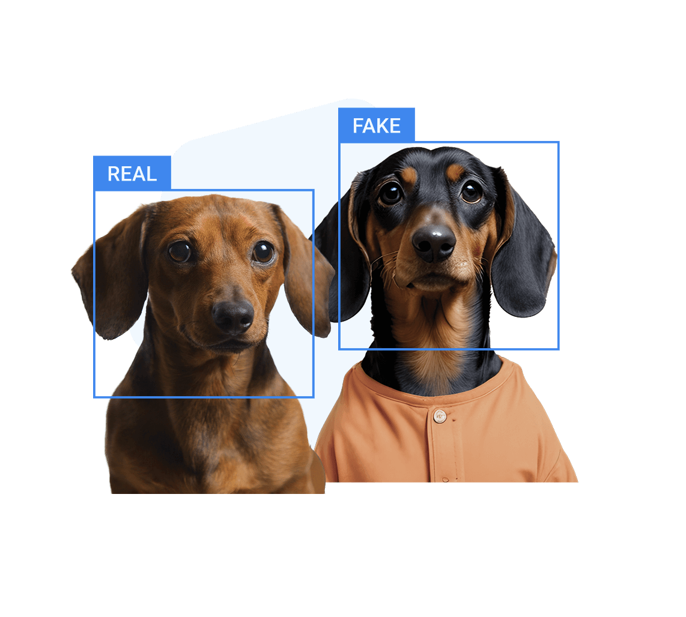
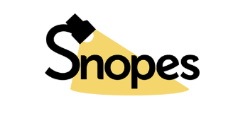
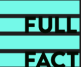

Provide instant and multi-dimensional media authenticity verification tools, covering automatic scanning, manual verification and traceability search.
Function: Specialized AI video scanning and
deepfake detection.
Technical Depth: Deepware operates as a
high-security gateway for video integrity. Unlike simple metadata
checks, it utilizes a sophisticated "ensemble" approach, running
multiple neural network models simultaneously to scan for facial
manipulation. It specifically targets the "FaceSwap" and
"LipSync" methods prevalent in modern deepfakes. The scanner
analyzes physiological signals that AI struggles to replicate,
such as the consistency of blood flow in skin
(photoplethysmography) and the natural irregularity of eye
movements. By providing a "Probability of Manipulation" score, it
allows users to see exactly which frames of a video exhibit
synthetic characteristics. In an era where "proof-of-personhood"
is critical, Deepware serves as a frontline defense against
synthetic identity theft and fabricated video evidence.
Function: Enterprise-grade multi-model detection
for audio, video, and images.
Technical Depth: Reality Defender is a
comprehensive, enterprise-grade platform designed to combat the
rising tide of "deepfake-as-a-service." Its architecture is
unique in its "multi-model" philosophy; rather than relying on a
single detection algorithm, it cross-references assets against a
massive library of known generative AI signatures. For audio
detection, it analyzes "spectral noise", the microscopic
mathematical patterns left behind by AI voice cloners that are
inaudible to the human ear. For imagery, it detects "tessellation
artifacts" and non-human geometric patterns in the latent space.
The platform is built for scalability, used by newsrooms and
financial institutions to verify large-scale data dumps. It
provides detailed forensic reports that break down whether a
piece of content is purely human, purely synthetic, or a "hybrid"
(a real video with an AI-altered audio track), which is a common
tactic in political disinformation campaigns.

Function: Identifies content generated by models
like Midjourney, DALL-E, or ChatGPT.
Technical Depth: Hive is the industry standard
for identifying "model-specific" origins. While other tools look
for generic "fakery," Hive is trained on the specific output
signatures of the world's most powerful generators, including
Midjourney (v4 through v6), DALL-E 3, and Adobe Firefly. This
granularity is vital because each model has its own "bias" in how
it renders textures, hair, and backgrounds. Hive's text detector
is similarly robust, focusing on "perplexity" and "burstiness",
two statistical measures of how predictable a text sequence is.
Since LLMs like ChatGPT function by predicting the most likely
next word, their outputs often lack the chaotic variability of
human thought. Hive quantifies this predictability to assign a
percentage-based confidence rating. This tool is essential for
educators, journalists, and content moderators who need to
differentiate between human-crafted narratives and
algorithmically optimized filler.
By performing a reverse image search, Google Lens doesn't just find copies; it analyzes the objects, landmarks, and text within a frame to find the original source or related news coverage. It is an essential first step in verifying whether an image has been taken out of context.
Unlike standard search, TinEye creates a unique digital signature for every image, allowing it to find exact matches even if the image has been cropped, resized, or color-edited. This makes it a professional-grade tool for tracking how a specific piece of misinformation has spread and evolved across the web.

The definitive Internet reference source for urban legends and rumors.
Global news verification and visual media debunking.

Independent fact-checking charity providing neutral analysis.
A nonpartisan "consumer advocate" for voters.